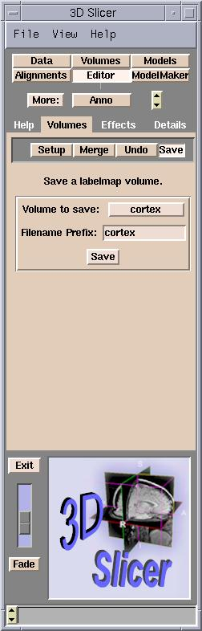
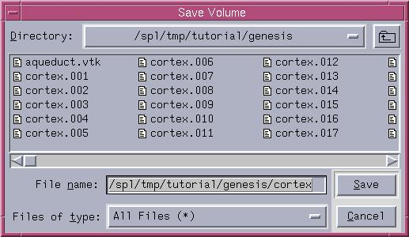

After creating new label map data with the Slicer edit features, it
may be necessary to save the new volume of data. To save the volume:
- On the Main menu, click Editor.
The Volumes tab appears.

- Click Save.
- From the menu, select the label map to save and click Save.
The Save Volume dialog box appears.

- Select the path and click Save.